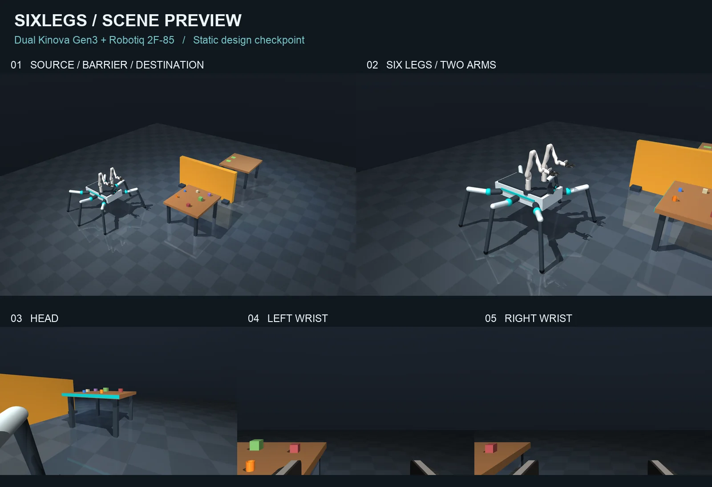
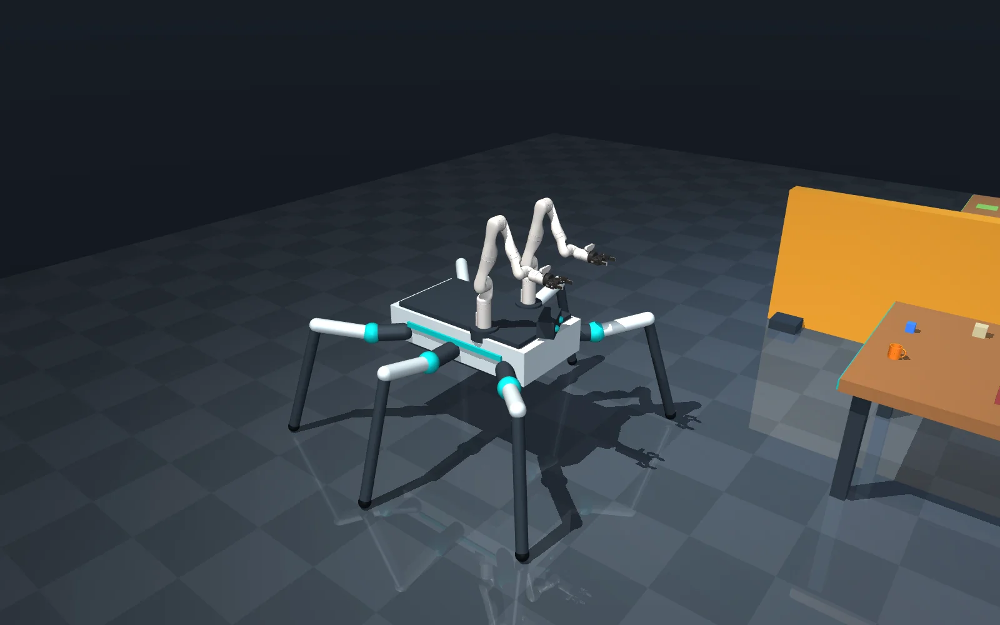
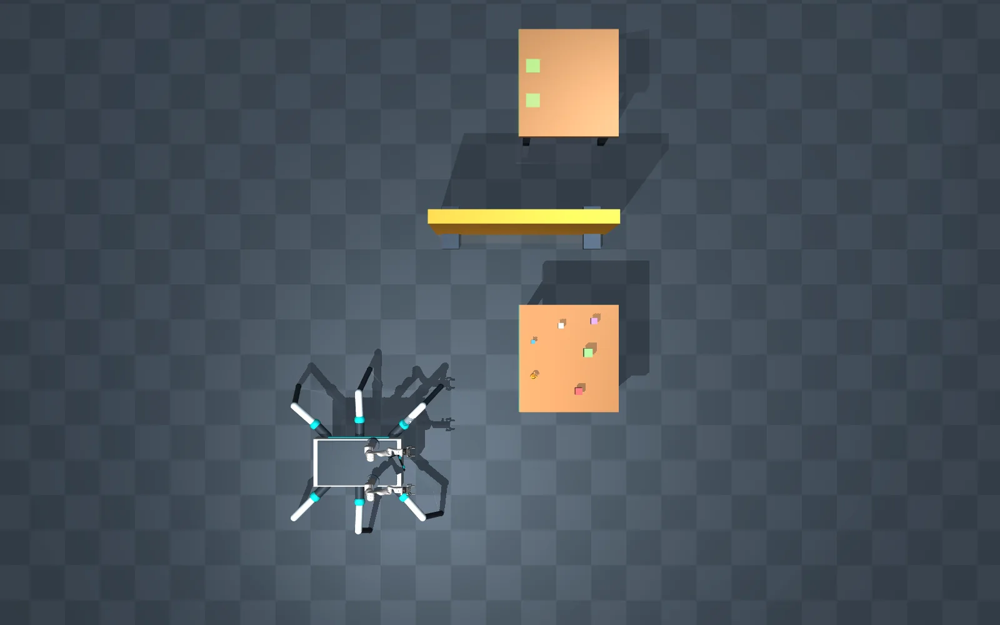
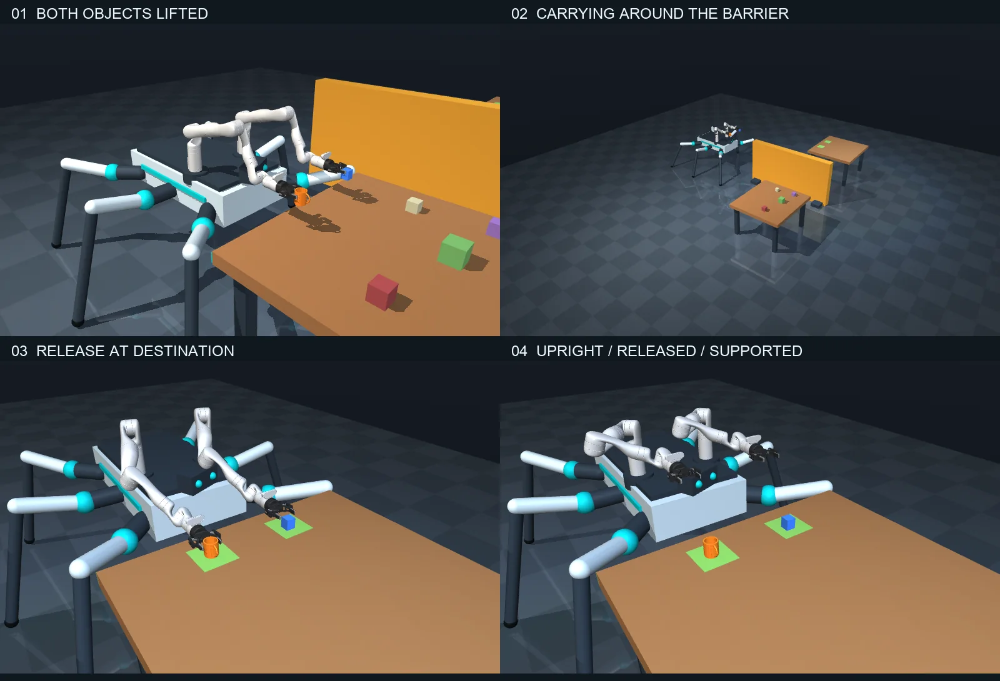

1 · A brief, and a static scene before motion
September 7, 2026 · 20:01–20:20 PDT · nothing moved until the scene was approved
The brief asked for a six-legged, spider-like robot with two independent arms that moves objects between tables: approach a cluttered source table from an offset start, pick up a small mug with one gripper and a block with the other, carry both around a barrier to a second table, then place and release them. The body could be built from primitives; the arms and grippers had to be the Kinova Gen3 and Robotiq 2F-85 models from MuJoCo Menagerie. It asked for documented masses, joint limits and torque limits, head, wrist and third-person cameras, and a preview of the scene before any movement.
So the scene came first. Two tables with 1.30 × 1.40 m tops at 0.84 m stand 3.6 m apart, with a barrier 2.4 m wide and 1.24 m high between them. The robot starts at (−2.15, −1.35) m, offset from the source table. On the source table sit an orange hollow mug, a blue block and four loose clutter blocks, all free bodies. Green squares on the destination mark where the two objects belong; they have no collision.
Five tests guarded the static scene: vendored asset hashes, model structure with two independent grippers, initial contacts on the six feet only, leg clearance over 150 sampled leg configurations, and a five-second physics hold. The checkpoint was ready 12 minutes 55 seconds into the session, with six camera renders inspected and the native macOS viewer tested. The user approved the preview six minutes later, and only then did movement work begin.

2 · The robot
September 7 · a primitive-shape body, Menagerie arms and grippers, documented limits
The body is boxes, capsules and spheres: a 1.14 × 0.62 × 0.23 m hull, a low belly for stability and a deck for the arms. Each leg has a yaw, a hip and a knee joint: a 0.22 m coxa, a femur and a long tibia ending in a 40 mm rubber foot. The front, middle and rear legs fan out at 45°, 90° and 135° on each side. Standing, the belly clears the floor by 0.61 m and the feet span about 2.10 × 2.36 m.
The two Gen3 arms stand on pedestals 0.47 m apart on the forward deck, above the leg plane. Their files are vendored unchanged from a pinned Menagerie commit with a SHA-256 hash for every file. The scene assembly namespaces each instance, adds travel bounds, damping and armature, and mounts the gripper the way Kinova's Menagerie instructions specify. Each 2F-85 keeps its two four-bar linkages, its tendon split and its three equality constraints, so the fingers move as a real linkage driven by one actuator.

| Component | Mass (kg) |
|---|---|
| Chassis hull | 16 |
| Belly · deck · head | 4 · 1.2 · 0.38 |
| Each leg (coxa 0.75, femur 1.15, cover 0.12, tibia 0.85, foot 0.15), × 6 | 3.02 |
| Each arm pedestal, × 2 | 0.45 |
| Each Kinova Gen3 (upstream inertials), × 2 | 8.1879 |
| Each Robotiq 2F-85 as attached, × 2 | ≈ 0.9026 |
| Trim strips | 0.05 |
| Complete robot (MuJoCo compiled) | ≈ 58.831 |
| Mug · block · each clutter block | 0.21 · 0.12 · 0.15 |
Joint travel and torque caps
| Joint group | Travel (rad) | Torque cap | Kp / Kv |
|---|---|---|---|
| Leg yaw, × 6 | −0.65 … +0.65 | ±65 N·m | 400 / 35 |
| Leg hip, × 6 | −0.75 … +0.70 | ±120 N·m | 650 / 45 |
| Leg knee, × 6 | −0.65 … +0.85 | ±100 N·m | 600 / 40 |
| Gen3 J1–J4, × 2 arms | J1, J3 ±π · J2 ±2.24 · J4 ±2.57 | ±105 N·m | 2000 / 100 |
| Gen3 J5–J7, × 2 arms | J5, J7 ±π · J6 ±2.09 | ±52 N·m | 500 / 50 |
| Robotiq actuator, × 2 | control 0 (open) … 255 (closed) | ±5 N·m (tendon) | upstream |
3 · Eighteen phases
September 7 · a fixed route and a programmed state machine
The task is a state machine of 18 phases. Timed phases end after a fixed duration; walking phases end when the base is within 15 mm of its waypoint and has almost stopped. The route is fixed for this scene: (−0.95, 0) → (−2.7, 0) → (−2.7, 3.6) → (−0.95, 3.6) m. The robot is never commanded to turn. It keeps facing the tables and walks forward, backward or sideways toward each waypoint, so its long footprint of arms and legs never swings near the fixtures. The footprint, not the chassis centre, sets how far west it must pass: the base needs X ≤ −2.5 m, and the route uses −2.7 m.
| # | Phase | Starts (s) | Ends when |
|---|---|---|---|
| 1 | Approach source | 0.00 | at (−0.95, 0) |
| 2 | Settle at source | 15.37 | 3 s |
| 3 | Align open grippers | 18.38 | 3 s |
| 4 | Lower beside objects | 21.39 | 2 s |
| 5 | Reach around mug and block | 23.40 | 2 s |
| 6 | Close both grippers | 25.41 | 2 s and both pads touching, on both grippers |
| 7 | Lift both objects | 27.42 | 3 s |
| 8 | Tuck arms for carrying | 30.43 | 3 s |
| 9 | Back away from source | 33.43 | at (−2.7, 0) |
| 10 | Walk around barrier | 48.22 | at (−2.7, 3.6) |
| 11 | Approach destination | 79.81 | at (−0.95, 3.6) |
| 12 | Settle at destination | 94.84 | 3 s |
| 13 | Extend above placement marks | 97.85 | 3 s |
| 14 | Lower onto destination | 100.86 | 3 s |
| 15 | Release both objects | 103.87 | 2 s |
| 16 | Withdraw open grippers | 105.88 | 2 s |
| 17 | Raise clear of table | 107.89 | 2 s |
| 18 | Verify placement | 109.90 | 3 s, then the success check at 112.91 s |

4 · One foot at a time
September 7 · a five-foot ripple gait, anchored to measured touchdowns
The floating base has no motor. It moves only because the feet push on the floor, so walking is entirely leg control. Each foot swings for 0.36 s while the other five carry the robot, in the order left front, right rear, left middle, right front, left rear, right middle; a full cycle takes 2.16 s. A swing lifts the foot 85 mm on a smooth arc and aims it ahead of its neutral spot in the direction of travel. Commanded speed is capped at 0.12 m/s and acceleration at 0.25 m/s². Closed-form inverse kinematics turns each foot target into yaw, hip and knee angles; a test checks it against MuJoCo's own forward kinematics to 10−7 rad on 60 random leg poses.
The controller runs at 100 Hz against 500 Hz physics, and its only output is joint targets. The transfer test enforces that: it checks that a controller update never changes the robot's position or the objects', and that no external forces are applied at any step.
Walking took 76.8 of the 112.9 simulated seconds. The longest stretch, 3.6 m sideways past the barrier, took 31.6 s, an average of 0.11 m/s against the 0.12 m/s cap.
5 · Holding by finger contact only
September 7 · no welds, no pose writes; both pads must touch before lifting
Each arm solves damped Jacobian inverse kinematics on a scratch copy of the simulation state, 15 iterations per controller update, starting from its previous answer. Only the resulting joint targets reach the simulated arm. Gravity compensation is added to those targets, and the original torque caps still apply.
Both grippers approach horizontally. They align beside the objects with open fingers, lower to pinch height, slide 16 cm forward around the mug and the block, and close. The right gripper takes the mug, a hollow cup of 64 mm diameter built from a floor, 20 wall segments and 12 handle segments, all of which collide; the left takes the 50 mm block. Both fit the gripper's 85 mm opening.
The lift has to be earned. After closing, the state machine counts the object's contacts with each gripper's two pads, and unless both pads touch on both grippers the run stops with an error. In the recorded run both grasps were confirmed at 27.42 s. The model has no mocap bodies and no weld constraints; its only six equality constraints are the grippers' own linkages. The mug and the block stay free bodies, held by friction at the pads, and while carried they stayed above 1.10 m, well clear of the 1 m abort line.
6 · What broke, and the clock
September 7 · four problems, each fixed at its cause
Four things went wrong while the demo was built. Each was fixed where it arose: no collision geometry was removed and no object was attached to a hand.
| Problem | What happened | Fix |
|---|---|---|
| macOS viewer launch | Running mjpython through uv could not find libpython3.12.dylib |
The launcher passes the interpreter's library directory to the official macOS trampoline in a subprocess environment; no system libraries or shell settings changed |
| Open-loop foot schedule | About 0.5 m of accumulated body-position error | Measured touchdowns and a body reference held within 35 mm of the measured base (chapter 4) |
| First horizontal grasp | The Gen3 wrist vision housing went through the table edge | Roll the tool frame; collision geometry unchanged (chapter 5) |
| Gripper mounting | A redundant Robotiq coupling was stacked on the Kinova wrist interface | Follow the Kinova-specific Menagerie instructions: drop the base mount and attach the gripper directly |
The clock
| Milestone | Local time (PDT) | Note |
|---|---|---|
| Session start (approximate) | 20:01:31 | Workspace creation time |
| Static scene checkpoint | 20:14:26 | Five tests pass, six renders inspected |
| Scene approved, movement work begins | 20:20:32 | Review pause of about 6 min 6 s |
| First complete transfer | by 20:29:04 | Next recorded clock reading, an upper bound |
| Tests and recording inspected | 20:36:09 | Seven tests pass |
| Demo implemented and validated | 20:37:19 | 35 min 48 s after the session start |
| Six-view film verified | 20:46:29 | A 4 min 40 s follow-up |
7 · Results
The nominal run: one deterministic transfer, checked at every 2 ms physics step
| Result | Mug, right | Block, left |
|---|---|---|
| Final position (m) | (0.124, 3.369, 0.840) | (0.141, 3.808, 0.870) |
| Placement error | 6.2 mm | 16.5 mm |
| Resting on the destination | yes | yes |
| Released by the gripper | yes | yes |
| Upright | yes | yes |
| Lowest object-origin height while carried | 1.107 m | 1.138 m |
| Whole run | Measured |
|---|---|
| Simulated time | 112.912 s |
| Headless wall time | 23.5 s |
| Largest arm IK position residual | 16.9 mm |
| Peak actuator torque / cap | 1.0 |
| Robot penetration of tables or barrier over 1 mm | none |
| Robot self-penetration over 1 mm (20 Hz trajectory) | none |
| Tests | 7 passed |
A peak torque fraction of 1.0 means at least one actuator reached its cap during the run; no cap was ever exceeded. The seven tests cover the vendored asset hashes, the model structure, the initial contacts, sampled leg clearance, a stationary physics hold, the leg inverse kinematics against MuJoCo, and the complete transfer.

8 · Cameras, the film, and next steps
Six synchronized views rendered from the recorded run; the cameras are observer output
Scene cameras
third_person: the source, the barrier and the destination- Following detail: a tracking view that follows the chassis in the film (
robot_detailis its fixed counterpart) overhead: layout and route clearance
Robot cameras
head: on the head, panned 0.4 rad toward the source, 75° vertical field of viewleft_wrist,right_wrist: the Menagerie Gen3 bracelet cameras, 41.84°, showing their own fingers and the objects
What they are for
- Watching and recording; the controller never reads a pixel
- It uses simulator state and known table coordinates
- No object detection or visual localization is implemented
The headless run saves the positions of every body and the joint commands at 20 Hz. The film is rendered from that recording: for each frame the saved state is restored, MuJoCo recomputes the geometry, and all six panels are drawn from the same simulated instant. Nothing in the film is animated separately from the physics. The six-view film is 1920 × 1080 at 20 frames per second, 2,338 frames and 116.9 s long, at real time, with the phase and the simulated clock on screen. The shorter overview below is the same run at twice real time.